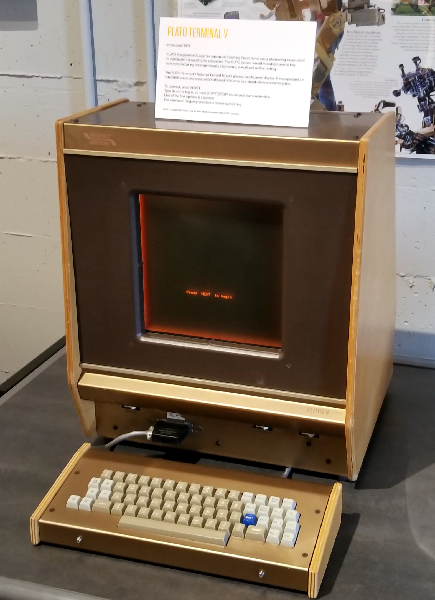
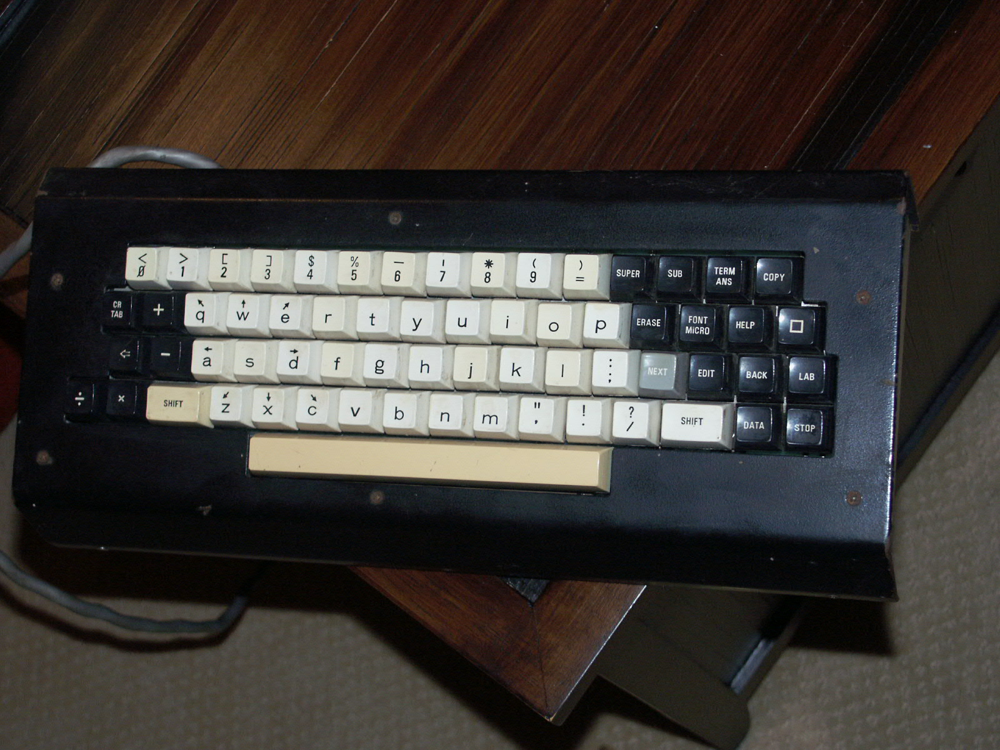

PLATO V Terminal
The orange-glowing touchscreen terminal that split a mainframe

Overview
The PLATO V terminal was the last major terminal of the PLATO computer-assisted-instruction system, deployed by Control Data Corporation starting around 1980-81 and built at the Computer-based Education Research Laboratory (CERL) of the University of Illinois. Its design began at CERL in 1976 (CERL report X-46), and by 1981 the terminal served the RankTrek application shown in its most famous photograph. Inside, the terminal carried an Intel 8080 microprocessor with enough memory to download and execute small courseware modules locally — a genuine split between host mainframe and local micro, and the first terminal to combine the two. The terminal's display was Donald Bitzer's orange gas-plasma panel: a flat, monochrome 512x512 bitmap with hardwired character and vector plotting. Over that glow sat an infrared touch panel — a 16x16 grid of light beams around the screen that detected a finger anywhere on the display, turning the terminal itself into a touchscreen.
The interaction model is the strange, embodied part. Students did not push a mouse around a desk; they reached up and pressed the luminous orange panel, and the distant CDC Cyber mainframe answered through the same panel — or through a small program that had just been downloaded into the terminal's own 8080 to animate, play sound, or draw. PLATO's touchscreen, plasma display, chat rooms (Talkomatic), message boards (PLATO Notes), and multiplayer games (Avatar, Empire) made it the first mass online community, and the PLATO V terminal was the physical door into that world.
Deep dive
PLATO (Programmed Logic for Automatic Teaching Operations) began at the University of Illinois in 1960 on the ILLIAC I. Donald Bitzer invented the plasma display around 1964 to give PLATO a cheap, reliable graphics screen, and the PLATO IV terminal (1972) added the infrared touch panel and microfiche image projection. PLATO IV is outside this museum's window; the PLATO V terminal, designed at CERL from 1976 and deployed from 1980-81, is the in-window refinement — and the version that added the local Intel 8080 microprocessor.
The PLATO V was a networked appliance you operated with your hands on the screen itself. The infrared touch panel was a 16x16 grid of emitter/sensor pairs around the display bezel; breaking a beam reported the touch square, with an audible beep. In courseware, students answered by touching multiple-choice boxes, moving objects by touch, or drawing with a finger — a direct-manipulation interface a decade before general-purpose touch screens. The terminal also received a keyboard from Regency Systems, a Champaign company founded by CERL alumni.
The PLATO V's Intel 8080 could download small executable modules from the mainframe and run them locally, offloading animation and computation from the time-sharing host. The Wikipedia-cited RankTrek application was 'one of the first to combine simultaneous local microprocessor-based computing with remote mainframe computing.' This split — fat client and thin client at once — is the same architecture question that defines the web today.
PLATO was the first mass online community: Talkomatic (1973) was real-time text chat, PLATO Notes (1973) was the ancestor of newsgroups and Lotus Notes, and games like Empire (1974) and Avatar (1979) pioneered networked multiplayer. Thousands of terminals on a dozen networked mainframes served schools, prisons, and universities. The terminal was the door into that world — a touchscreen window onto chat, mail, and multiplayer gaming in 1981.
CDC's William Norris licensed PLATO in 1976 and invested an estimated $600 million, betting that computer-based education would be a major market. It was a commercial failure — CDC charged $50/hour for access and courseware cost roughly $300,000 per delivery hour to develop — yet the last production PLATO system ran until 2006. The terminal line is preserved at the Computer History Museum and the Living Computers Museum, and the Cyber1 project still hosts PLATO courseware.
Team & pioneers
- J. E. Stifle. CERL engineer who designed the PLATO V terminal (CERL reports X-46 and ED200244)
- Donald Bitzer. Founder of CERL and inventor of the plasma display and PLATO touchscreen
- Control Data Corporation. Licensed PLATO in 1976 and commercialized it under William Norris
- Regency Systems, Inc.. CERL-alumni company that manufactured the PLATO V keyboard
Media


Sources
- Wikipedia — PLATO (computer system)
- ERIC ED200244 — The PLATO V Terminal (J. E. Stifle, CERL, April 1978)
- CERL X-46 — A Preliminary Report on the PLATO V Terminal (April 1976)
- Woolley — PLATO: The Emergence of Online Community (Computer History Museum)
- Computer History Museum — PLATO V keyboard (object 102654833)